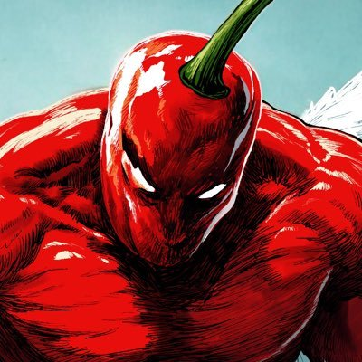

𝐀𝐬𝐡𝐥𝐞𝐲 𝐁𝐥𝐨𝐜𝐤🍥🌹🇹🇼🏳️⚧️
@bolckAshley
天天操弄話術猛吹狗哨有意思嗎？😅
先是挑選極端個例，然後把奧伯林學院「有強烈進步主義傾向」的事實，和「個別人的極端言論」並置，暗暗暗示這有必然聯繫，玩關聯謬誤有一手的👍
藉著批評某個學生的極端言論，順帶為自己保守主義的敘事塗脂抹粉，把個別例子包裝成群體本質——偷換概念的廉價把戲罷了。

变态辣椒RebelPepper
@RebelCartoon
中国人学生Julia Xu被问及对查理·柯克之死的看法，她说，“我们需要恢复政治暗杀，不是所有人都配享有言论自由，有些人应该害怕表达自己的意见”，她的教授为她辩护，下课后还说同意她的看法。她所在的俄亥俄州奥伯林学院，从成立起就有强烈的进步主义倾向，历史上被视为最进步的高等教育机构之一。 https://t.co/nDiuMpLHuX